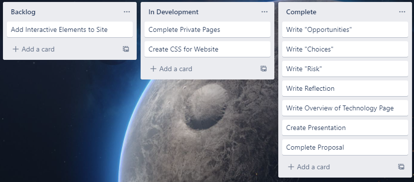

Meetings
Team name: Team 1213
Team Coordinator/Leader: Peter Scandle
It is important to note that, as I am a team of one student, I did not have any meetings.
I did however utilise a Trello board to manage my tasks, and while it's implementation is very basic, it served well
to keep me on track, ensuring that I was aware of all deliverables and assessment items that still needed to be completed.

Created 10 June 2022
by Peter Scandle.